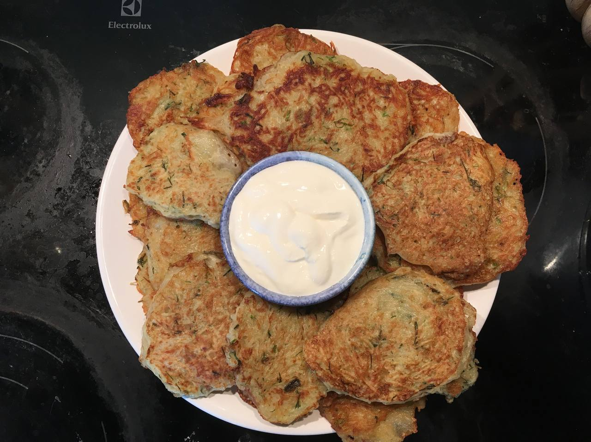

Potato pancakes

Difficulty:
Easy
Portions:
3
Category:
Dinner
Ingredients:
4 large potatoes (red) 1 onion 1 clove of garlic Salt A little flour to keep the dough from falling apart (I think Belarusians don't use it) Finely chopped dill
Preporation
Grate the potatoes on a coarse grater by hand or in a food processor. Chop the onion and garlic. Mix everything together. Season with salt, herbs, and a little flour. Mix thoroughly. Pour oil into a preheated frying pan, scoop out the dough with a spoon, drop it into the pan, and flatten it with a spoon. Fry until golden brown on both sides. Serve hot with sour cream.